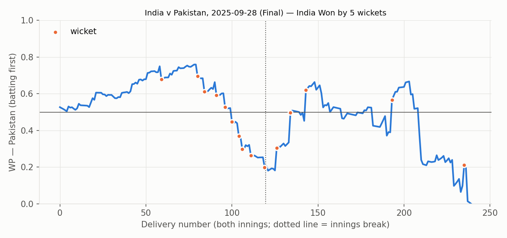

The Top 10
Every player here pairs elite core skill with a record of beating expectation on high-pressure balls. Ratings are runs per 100 high-pressure balls above expectation.
Rating with ± one standard error. Ordered by rank score (rating minus one standard error). Hover a row for role and strengths.
Find any ranked player
The usual way of measuring pressure doesn't predict who'll deliver next season. This rating does.
Every rating was rebuilt from 2022–24 data alone, then tested on how well it predicted each player's 2025–26 performance on high-pressure balls.
"Pressure economy minus normal economy", the standard pressure metric
This rating, same test
Among bowlers, this rating predicts next season's pressure performance; the standard delta does not
Correlation (Pearson r) between each 2022–24 measure and 2025–26 run value on high-pressure balls, with 95% intervals.
How pressure is measured
A ball is under pressure when it can swing the result. So instead of guessing which situations feel tense, the analysis measures that swing for every single delivery.
Win probability
A model of the batting side's chance of winning from any point in a match. In a chase it reads runs needed, balls left, wickets in hand, the required rate against the venue's usual scoring, and a ball-by-ball simulation of how the rest of the chase could unfold. In the first innings it compares the score with par for that stage, using only matches played before.
Leverage Index
For each ball, a second model gives the chance of every result: dot, one, two, three, four, six, wicket, wide or no-ball. Leverage is how far the win probability is expected to move on that one ball.
LI = LIraw ÷ average LIraw
An average ball scores 1. The top 25% of balls by leverage within each innings form the pressure set, H; the rest form the comparison set, L.
The steep swings are the high-pressure balls
Pakistan's win probability through the 2025 Asia Cup final against India. Each dot is a wicket.

Wins gained or lost against a league-average side in each pressure situation since 2022.
Total win probability against league average, summed over RR's high-pressure balls in each situation.
The ranked bowlers with the strongest records in exactly those moments
Run value per 100 high-pressure balls in that situation, top-10 ranked bowlers.
And RR already holds the top-ranked batter. Vaibhav Sooryavanshi is in the 2026 squad, and with just two seasons behind him, his pressure record is only getting started.
For the 2027 auction
The Royals have always backed the ones others overlooked.
The data says: back the ones who don't blink.
How it's built
The same definitions and formulas as the report. Open any panel.